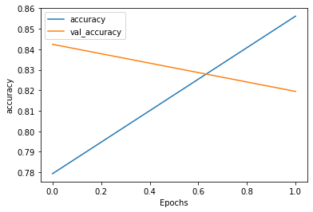
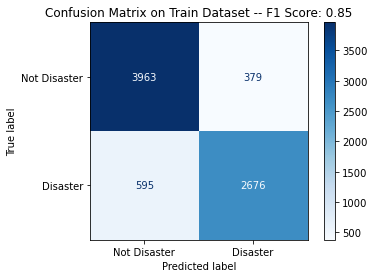

NLP with Disaster tweet- basic#
Đây là tóm tắt giải pháp cho nhiệm vụ NLP with Disaster tweet-basic:
1.Load data#
import numpy as np
import pandas as pd
import matplotlib.pyplot as plt
from tqdm import tqdm
from sklearn.metrics import f1_score, precision_score, recall_score, confusion_matrix, ConfusionMatrixDisplay
train_data = pd.read_csv("/kaggle/input/nlp-getting-started/train.csv", index_col ='id')
test_data = pd.read_csv("/kaggle/input/nlp-getting-started/test.csv", index_col = 'id')
---------------------------------------------------------------------------
FileNotFoundError Traceback (most recent call last)
Cell In[2], line 1
----> 1 train_data = pd.read_csv("/kaggle/input/nlp-getting-started/train.csv", index_col ='id')
2 test_data = pd.read_csv("/kaggle/input/nlp-getting-started/test.csv", index_col = 'id')
File ~\AppData\Local\anaconda3\Lib\site-packages\pandas\io\parsers\readers.py:912, in read_csv(filepath_or_buffer, sep, delimiter, header, names, index_col, usecols, dtype, engine, converters, true_values, false_values, skipinitialspace, skiprows, skipfooter, nrows, na_values, keep_default_na, na_filter, verbose, skip_blank_lines, parse_dates, infer_datetime_format, keep_date_col, date_parser, date_format, dayfirst, cache_dates, iterator, chunksize, compression, thousands, decimal, lineterminator, quotechar, quoting, doublequote, escapechar, comment, encoding, encoding_errors, dialect, on_bad_lines, delim_whitespace, low_memory, memory_map, float_precision, storage_options, dtype_backend)
899 kwds_defaults = _refine_defaults_read(
900 dialect,
901 delimiter,
(...)
908 dtype_backend=dtype_backend,
909 )
910 kwds.update(kwds_defaults)
--> 912 return _read(filepath_or_buffer, kwds)
File ~\AppData\Local\anaconda3\Lib\site-packages\pandas\io\parsers\readers.py:577, in _read(filepath_or_buffer, kwds)
574 _validate_names(kwds.get("names", None))
576 # Create the parser.
--> 577 parser = TextFileReader(filepath_or_buffer, **kwds)
579 if chunksize or iterator:
580 return parser
File ~\AppData\Local\anaconda3\Lib\site-packages\pandas\io\parsers\readers.py:1407, in TextFileReader.__init__(self, f, engine, **kwds)
1404 self.options["has_index_names"] = kwds["has_index_names"]
1406 self.handles: IOHandles | None = None
-> 1407 self._engine = self._make_engine(f, self.engine)
File ~\AppData\Local\anaconda3\Lib\site-packages\pandas\io\parsers\readers.py:1661, in TextFileReader._make_engine(self, f, engine)
1659 if "b" not in mode:
1660 mode += "b"
-> 1661 self.handles = get_handle(
1662 f,
1663 mode,
1664 encoding=self.options.get("encoding", None),
1665 compression=self.options.get("compression", None),
1666 memory_map=self.options.get("memory_map", False),
1667 is_text=is_text,
1668 errors=self.options.get("encoding_errors", "strict"),
1669 storage_options=self.options.get("storage_options", None),
1670 )
1671 assert self.handles is not None
1672 f = self.handles.handle
File ~\AppData\Local\anaconda3\Lib\site-packages\pandas\io\common.py:859, in get_handle(path_or_buf, mode, encoding, compression, memory_map, is_text, errors, storage_options)
854 elif isinstance(handle, str):
855 # Check whether the filename is to be opened in binary mode.
856 # Binary mode does not support 'encoding' and 'newline'.
857 if ioargs.encoding and "b" not in ioargs.mode:
858 # Encoding
--> 859 handle = open(
860 handle,
861 ioargs.mode,
862 encoding=ioargs.encoding,
863 errors=errors,
864 newline="",
865 )
866 else:
867 # Binary mode
868 handle = open(handle, ioargs.mode)
FileNotFoundError: [Errno 2] No such file or directory: '/kaggle/input/nlp-getting-started/train.csv'
train_data.shape
(7613, 4)
2. Preprocessing#
!pip install transformers
import transformers
Requirement already satisfied: transformers in /opt/conda/lib/python3.7/site-packages (2.9.0)
Requirement already satisfied: filelock in /opt/conda/lib/python3.7/site-packages (from transformers) (3.0.10)
Requirement already satisfied: numpy in /opt/conda/lib/python3.7/site-packages (from transformers) (1.18.1)
Requirement already satisfied: regex!=2019.12.17 in /opt/conda/lib/python3.7/site-packages (from transformers) (2020.4.4)
Requirement already satisfied: sacremoses in /opt/conda/lib/python3.7/site-packages (from transformers) (0.0.43)
Requirement already satisfied: sentencepiece in /opt/conda/lib/python3.7/site-packages (from transformers) (0.1.86)
Requirement already satisfied: tqdm>=4.27 in /opt/conda/lib/python3.7/site-packages (from transformers) (4.45.0)
Requirement already satisfied: requests in /opt/conda/lib/python3.7/site-packages (from transformers) (2.23.0)
Requirement already satisfied: tokenizers==0.7.0 in /opt/conda/lib/python3.7/site-packages (from transformers) (0.7.0)
Requirement already satisfied: joblib in /opt/conda/lib/python3.7/site-packages (from sacremoses->transformers) (0.14.1)
Requirement already satisfied: six in /opt/conda/lib/python3.7/site-packages (from sacremoses->transformers) (1.14.0)
Requirement already satisfied: click in /opt/conda/lib/python3.7/site-packages (from sacremoses->transformers) (7.1.1)
Requirement already satisfied: chardet<4,>=3.0.2 in /opt/conda/lib/python3.7/site-packages (from requests->transformers) (3.0.4)
Requirement already satisfied: urllib3!=1.25.0,!=1.25.1,<1.26,>=1.21.1 in /opt/conda/lib/python3.7/site-packages (from requests->transformers) (1.24.3)
Requirement already satisfied: idna<3,>=2.5 in /opt/conda/lib/python3.7/site-packages (from requests->transformers) (2.9)
Requirement already satisfied: certifi>=2017.4.17 in /opt/conda/lib/python3.7/site-packages (from requests->transformers) (2020.4.5.1)
WARNING: You are using pip version 20.1; however, version 24.0 is available.
You should consider upgrading via the '/opt/conda/bin/python3.7 -m pip install --upgrade pip' command.
from transformers import BertTokenizer
import tensorflow as tf
tokenizer = BertTokenizer.from_pretrained('bert-large-uncased', do_lower_case = True)
def bert_encode(data,max_length) :
input_ids = []
attention_masks = []
for text in data.text:
encoded = tokenizer.encode_plus(
text,
add_special_tokens = True,
max_length = max_length,
pad_to_max_length= True,
return_attention_mask = True,
)
input_ids.append(encoded['input_ids'])
attention_masks.append(encoded['attention_mask'])
return np.array(input_ids),np.array(attention_masks)
train_input_ids,train_attention_masks = bert_encode(train_data,60)
test_input_ids,test_attention_masks = bert_encode(test_data,60)
len(train_input_ids)
7613
3. Model#
Dùng mô hình TFBertModel được đào tạo trước từ hugging face
from transformers import TFBertModel
bert_model = TFBertModel.from_pretrained('bert-large-uncased')
import tensorflow as tf
from tensorflow.keras.optimizers import Adam
def create_model(bert_model):
input_ids = tf.keras.Input(shape=(60,),dtype='int32')
attention_masks = tf.keras.Input(shape=(60,),dtype='int32')
output = bert_model([input_ids,attention_masks])
output = output[1]
output = tf.keras.layers.Dense(32,activation='relu')(output)
output = tf.keras.layers.Dropout(0.2)(output)
output = tf.keras.layers.Dense(1,activation='sigmoid')(output)
model = tf.keras.models.Model(inputs = [input_ids,attention_masks],outputs = output)
model.compile(Adam(lr=6e-6), loss='binary_crossentropy', metrics=['accuracy'])
return model
model = create_model(bert_model)
model.summary()
Model: "model"
__________________________________________________________________________________________________
Layer (type) Output Shape Param # Connected to
==================================================================================================
input_1 (InputLayer) [(None, 60)] 0
__________________________________________________________________________________________________
input_2 (InputLayer) [(None, 60)] 0
__________________________________________________________________________________________________
tf_bert_model (TFBertModel) ((None, 60, 1024), ( 335141888 input_1[0][0]
input_2[0][0]
__________________________________________________________________________________________________
dense (Dense) (None, 32) 32800 tf_bert_model[0][1]
__________________________________________________________________________________________________
dropout_73 (Dropout) (None, 32) 0 dense[0][0]
__________________________________________________________________________________________________
dense_1 (Dense) (None, 1) 33 dropout_73[0][0]
==================================================================================================
Total params: 335,174,721
Trainable params: 335,174,721
Non-trainable params: 0
__________________________________________________________________________________________________
history = model.fit([train_input_ids,train_attention_masks],train_data.target,validation_split=0.2, epochs=2,batch_size=10)
Train on 6090 samples, validate on 1523 samples
Epoch 1/2
6090/6090 [==============================] - 192s 32ms/sample - loss: 0.4847 - accuracy: 0.7793 - val_loss: 0.3839 - val_accuracy: 0.8424
Epoch 2/2
6090/6090 [==============================] - 168s 28ms/sample - loss: 0.3666 - accuracy: 0.8562 - val_loss: 0.4242 - val_accuracy: 0.8194
def plot_graphs(history, string):
plt.plot(history.history[string])
plt.plot(history.history['val_'+string])
plt.xlabel('Epochs')
plt.ylabel(string)
plt.legend([string, 'val_'+string])
plt.show
plot_graphs(history, 'accuracy')

def displayConfusionMatrix(y_true, y_pred, dataset):
disp = ConfusionMatrixDisplay.from_predictions(
y_true,
y_pred,
display_labels=["Not Disaster","Disaster"],
cmap=plt.cm.Blues
)
tn, fp, fn, tp = confusion_matrix(y_true, y_pred).ravel()
f1_score = tp / (tp+((fn+fp)/2))
disp.ax_.set_title("Confusion Matrix on " + dataset + " Dataset -- F1 Score: " + str(f1_score.round(2)))
y_train_pred = model.predict([train_input_ids, train_attention_masks])
displayConfusionMatrix(train_data.target, (y_train_pred>0.5).astype(int), "Train")

4. Output#
y_pred = model.predict([test_input_ids, test_attention_masks])
y_pred = (y_pred>0.5).astype(int).flatten()
y_pred
array([0, 1, 1, ..., 1, 1, 1])
output = pd.DataFrame({'id': test_data.index, 'target': y_pred})
output.to_csv('sample_submission1.csv', index = False)
output
| id | target | |
|---|---|---|
| 0 | 0 | 0 |
| 1 | 2 | 1 |
| 2 | 3 | 1 |
| 3 | 9 | 1 |
| 4 | 11 | 0 |
| ... | ... | ... |
| 3258 | 10861 | 1 |
| 3259 | 10865 | 1 |
| 3260 | 10868 | 1 |
| 3261 | 10874 | 1 |
| 3262 | 10875 | 1 |
3263 rows × 2 columns